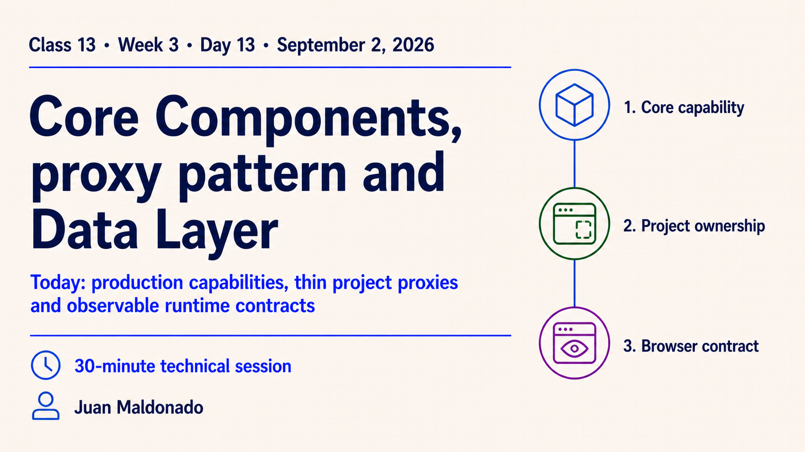
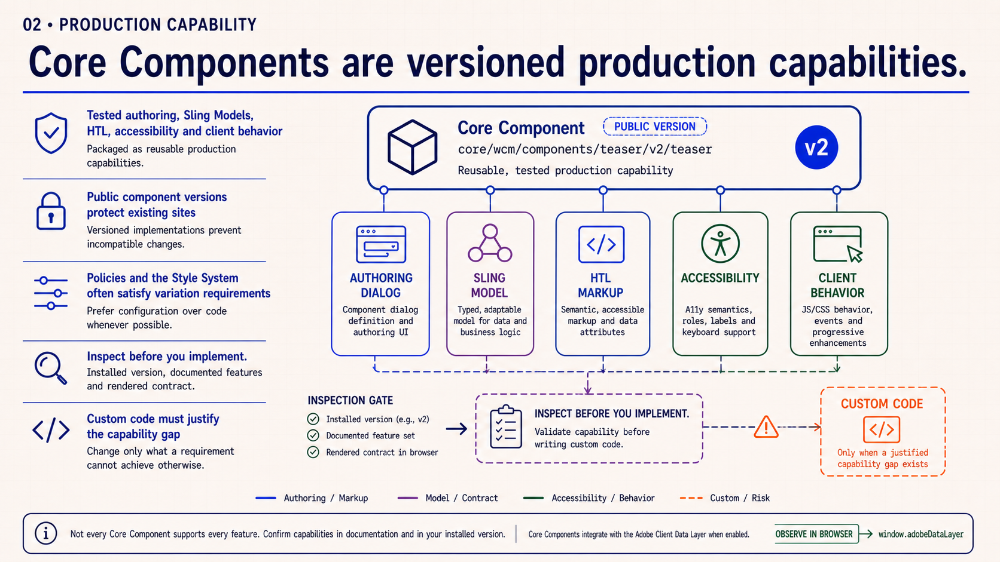
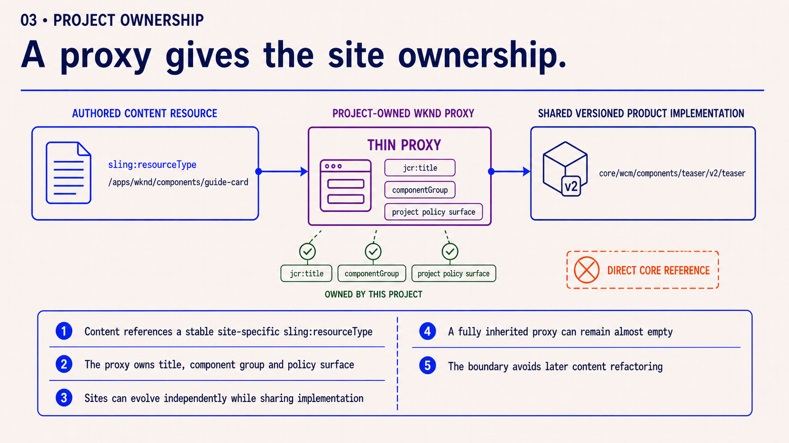
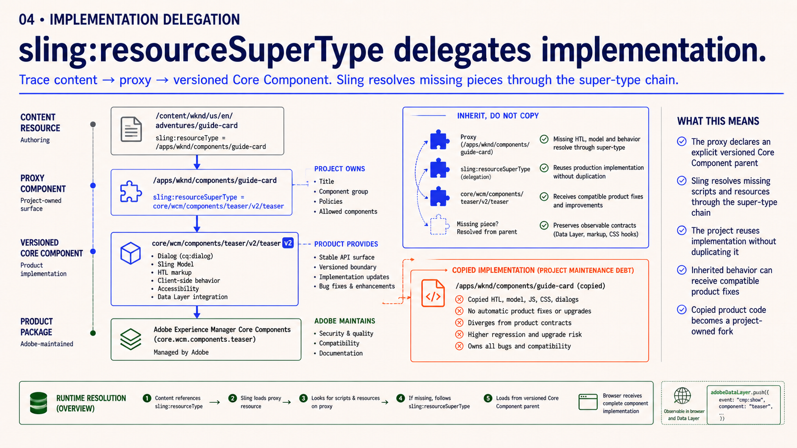
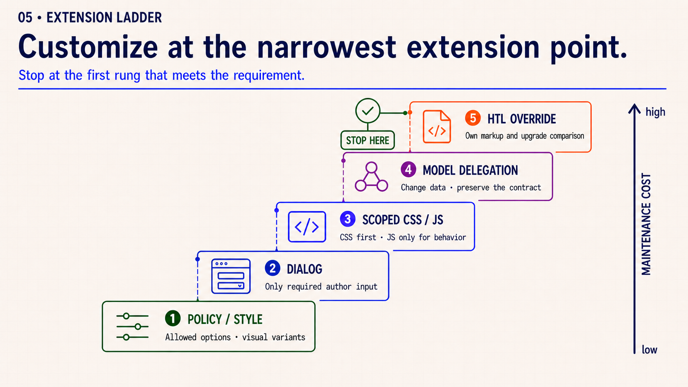
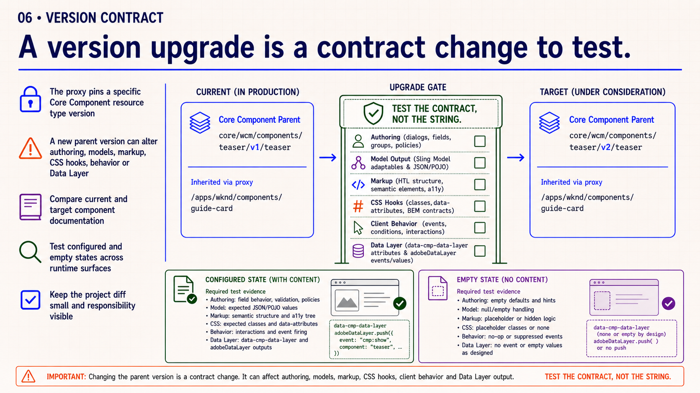
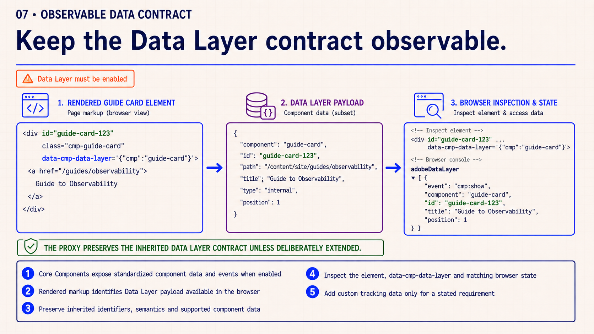
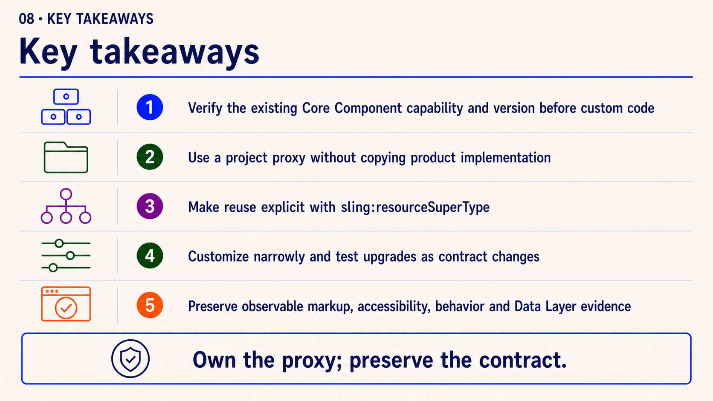
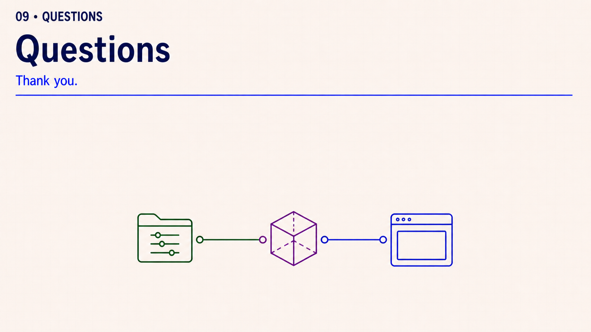

Observable outcome: each developer can explain a project proxy and its explicit super type, justify the narrowest customization point and verify the inherited markup and Data Layer contract in the browser.
Topic summary
Core Components are versioned production capabilities. A project-owned proxy gives authored content a stable site-specific resource type while sling:resourceSuperType delegates the implementation to an explicit Core Component version.
Customization starts at the narrowest extension point that meets the requirement. Version changes, rendered markup, accessibility, client behavior and Adobe Client Data Layer values remain contracts that must be observed and tested.
30-minute agenda
| Time | Activity | Facilitation |
|---|
| 0–3 | Opening | Preview production capability, project ownership and browser contracts. |
| 3–9 | Slide 2 | Inspect the existing Core Component capability and public version. |
| 9–15 | Slides 3–4 | Trace content through the project proxy and explicit super type. |
| 15–20 | Slide 5 | Walk the extension-cost ladder from policy to HTL override. |
| 20–26 | Slides 6–7 | Test a version change and inspect the Data Layer contract. |
| 26–28 | Slide 8 | Summarize the five safe-reuse rules. |
| 28–30 | Slide 9 | Questions only; no review exercise or assignment handoff. |
Complete slide deck
Study each slide with its presenter notes, then copy it into PowerPoint or download its PNG.

Detailed presenter notes
- Present: identify the session, presenter, date and 30-minute scope.
- Preview: production capabilities, thin project proxies and observable runtime contracts.

Detailed presenter notes
- Meaning: inspect the production capability before adding project code.
- Gate: verify installed version, documented features and rendered contract.

Detailed presenter notes
- Meaning: content references the stable project resource type, not the product component directly.
- Ownership: the proxy owns title, group and policy surface.

Detailed presenter notes
- Trace: content resource → WKND proxy → versioned Core Component.
- Contrast: inheritance receives compatible maintenance; copied code becomes a project fork.

Detailed presenter notes
- Decision: choose the narrowest extension point that actually meets the requirement.
- Cost: an HTL override makes markup comparison part of project upgrade work.

Detailed presenter notes
- Meaning: a parent-version change can alter several observable surfaces.
- Evidence: test configured and empty states instead of validating only the path string.

Detailed presenter notes
- Trace: match the rendered identifier and Data Layer attribute to browser state.
- Boundary: add custom tracking data only for a stated requirement.

Detailed presenter notes
- Review: inspect capability, own a proxy, delegate explicitly and customize narrowly.
- Reinforce: preserve markup, accessibility, behavior and Data Layer evidence.

Detailed presenter notes
- Close: thank the audience and leave the floor open for questions they want to raise.
- Boundary: do not introduce prompts, a review exercise or another activity.
Proxy contract trace
- Locate the content resource and record its project-owned
sling:resourceType.
- Inspect the proxy and its explicit versioned
sling:resourceSuperType.
- Justify each local dialog, model, HTL, CSS or JavaScript change.
- Verify configured and empty states, rendered markup and Data Layer evidence in the browser.
Acceptance: no copied product implementation; the chosen customization is justified and the inherited runtime contract remains observable.
Official reading
{kind=link}
{kind=link}
{kind=link}
{kind=link}
{kind=link}
{kind=link}
{kind=link}
{kind=link}
{kind=link}